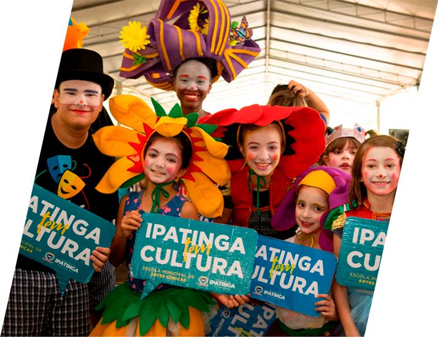

Home - Sebrae Minas
Relatório de
SUMÁRIO EXECUTIVO
Mensagem da
Administração
“O ano de 20211 mostrou que estamos no caminho certo ao articular, junto ao poder público e instituições parceiras, ações que aju¬dem a promover um ambiente cada vez mais propício ao empreendedorismo e aos pequenos negócios nos municípios mineiros. Conseguimos reagir rapi¬damente, criando um plano estratégico emergencial para contornar os desafios em nossas duas princi¬pais frentes de atuação: o Suporte Empresarial e o Desenvolvimento Econômico”.
Afonso Maria Rocha, Diretor Superintendente do Sebrae Minas LEIA A ÍNTEGRA
Quem
Somos
Quem Somos
Serviço de Apoio às Micro e Pequenas Empresas de Minas Gerais (Sebrae Minas) é uma entidade associativa de direito privado, sem fins lucrativos. Foi instituída como um serviço social autônomo com o objetivo de fomentar o desenvolvimento sustentável, a competitividade e o aperfeiçoamento técnico das microempresas e das empresas de pequeno porte industriais, comerciais e de serviços. Com sede em Belo Horizonte, faz parte do Sistema Sebrae e abrange os 853 municípios do estado, com nove sedes regionais e 55 microrregiões.
No âmbito do Suporte Empresarial, oferece orientação a quem quer abrir, ampliar, diversificar ou recuperar um pequeno negócio nas áreas industriais, comerciais, agrícolas e de serviço. Na linha do Desenvolvimento Econômico, o Sebrae participa da construção de políticas públicas que promovam um ambiente mais favorável ao surgimento e crescimento das micro e pequenas empresas. Seu propósito é “Impulsionar o empreendedorismo para transformar vidas”.
Saiba mais sobre o Sebrae Minas e suas regionais noRelatório de Sustentabilidade 2021 SAIBA MAIS


Planejamento
estratégico
Sob o ponto de vista estratégico, 2021 foi marco de transição para o Sebrae Minas, com duas estratégias atuando concomitantemente. A emergencial, criada em 2020 por conta da pandemia de Covid-19, e a estratégia do ciclo 2021 – 2023, focada na reelaboração de sua identidade organizacional.
A Estratégia 2023 do Sebrae Minas incorpora diretrizes da Agenda 2030, uma vez que, em maio de 2021, o Sebrae Minas se tornou signatário do Pacto Global das Nações Unidas (ONU), maior iniciativa voluntária de cidadania corporativa do mundo. A organização considera que o seu trabalho impacta diretamente quatro dos 17 ODS, nesta ordem:

Minas entre as páginas XXX do Relatório de Sustentabilidade 2021. SAIBA MAIS

Desempenho
do Ano
O Sebrae Minas cumpre seu propósito por meio de dois negócios. O Suporte Empresarial é focado em artesãos, pequenas empresas, microempreendedores individuais, microempresas, potenciais empreendedores, potenciais empresários e produtores rurais e de agricultura familiar. Já o público atendido pelo Desenvolvimentos Econômico é formado por cooperativas, entidades empresariais, gestores públicos, instituições de ciência e tecnologia, instituições financeiras, lideranças locais e regionais, prefeituras, órgãos de desenvolvimento e professores.
A versão completa do Relatório de Sustentabilidade 2021 do Sebrae Minas, disponível para download neste link, traz detalhes a respeito de sete projetos de Suporte Empresarial, além dos principais eventos, e de 10 projetos de Desenvolvimento Econômico. Acesse e compartilhe!

Resultados
Financeiros
R$ 289 milhões de receitas em 2021
Confira os demais resultados financeiros do Sebrae Minas na página XXX do Relatório de Sustentabilidade 2021.
Responsabilidade
Socioambiental
Ciente da sua importância para o desenvolvimento sustentável da sociedade, o Sebrae Minas também realiza diversas iniciativas voltadas aos aspectos ambientais, sociais e de governança. Internamente, o Sistema de Gestão Ambiental gerencia medidas para reduzir os impactos ambientais potenciais de suas atividades.